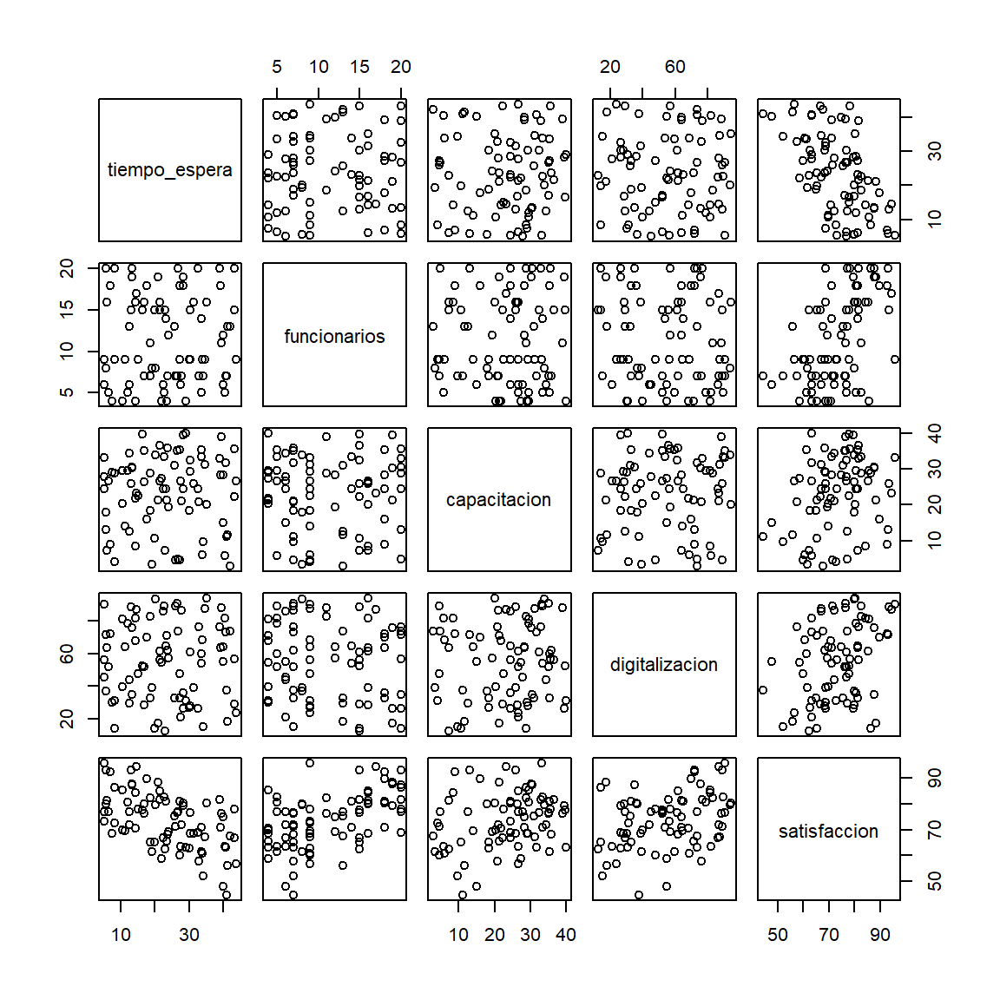
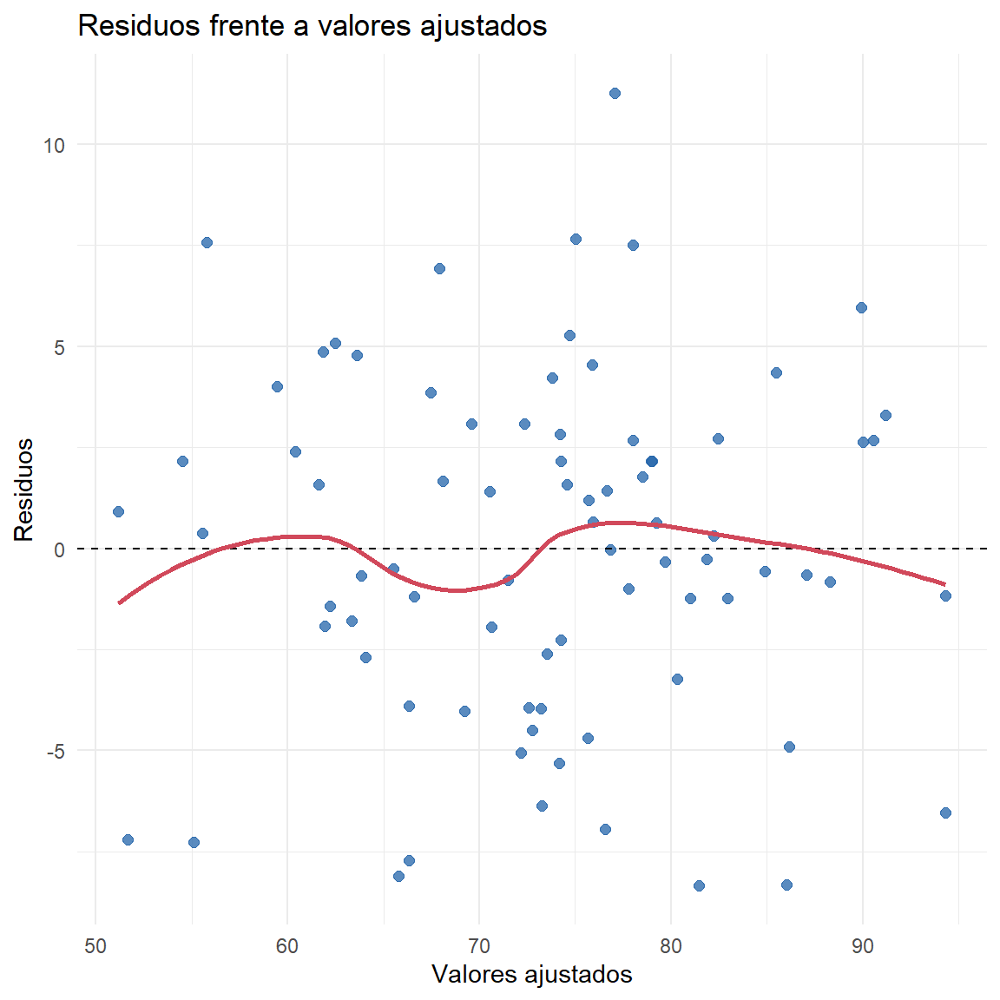
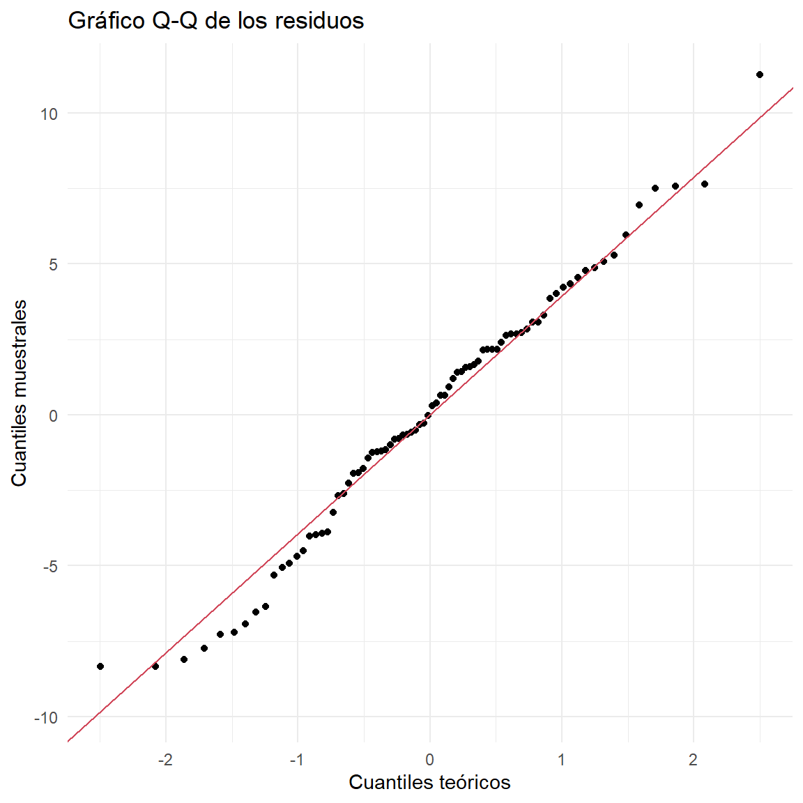
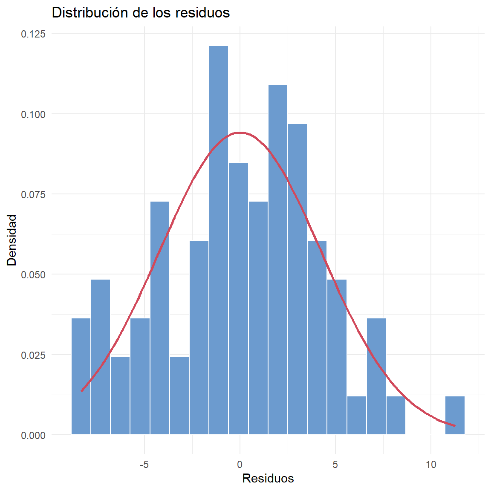
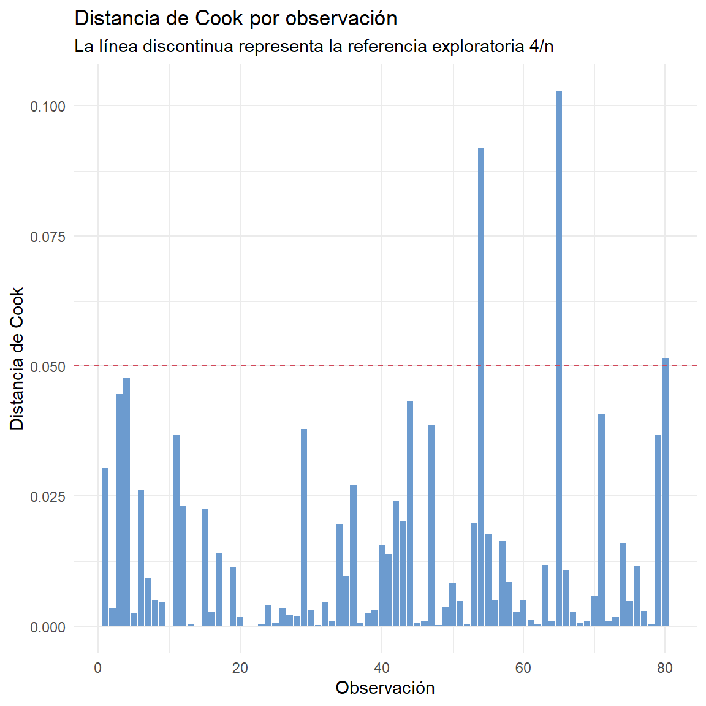

La regresión lineal múltiple es una técnica estadística que permite estudiar la relación entre una variable respuesta cuantitativa y dos o más variables explicativas. Además de estimar la asociación entre las variables, el modelo permite realizar predicciones y evaluar cuánto aporta cada predictor, manteniendo constantes los demás.
En este material se estudia la formulación del modelo, la interpretación de sus coeficientes, la estimación por mínimos cuadrados ordinarios y la validación de los principales supuestos. Se utiliza un ejercicio simulado en el contexto de la administración pública.
Nota
Resultados de aprendizaje
Al finalizar, el estudiante podrá:
Explicar el propósito y la estructura de un modelo de regresión lineal múltiple.
Estimar un modelo en R e interpretar sus coeficientes, pruebas de significancia y medidas de ajuste.
Examinar los supuestos mediante gráficos y pruebas estadísticas.
Identificar problemas de multicolinealidad y observaciones influyentes.
Comunicar los resultados con criterio estadístico, sin confundir asociación con causalidad.
2 .Conceptos Fundamentales de Regresión Lineal Múltiple
¿Qué es la regresión lineal múltiple?
La regresión lineal múltiple es un método estadístico paramétrico que modela el valor esperado condicional de una variable respuesta cuantitativa Y en función de k variables explicativas o predictoras X_1, X_2, \dots, X_k.
A diferencia de la regresión lineal simple que evalúa un único predictor, la formulación múltiple permite estimar el efecto marginal de cada variable explicativa controlando simultáneamente por la influencia de las demás covariables incluidas en el modelo. Por ejemplo, en la gestión de una entidad pública, puede analizarse cómo el número mensual de trámites atendidos se asocia con las horas de capacitación del personal, los años de experiencia laboral y el nivel de implementación tecnológica.
Modelo poblacional y notación
Para la observación i \in \{1, 2, \dots, n\}, el modelo poblacional de regresión lineal múltiple se expresa como:
En notación matricial, considerando el vector respuesta \mathbf{Y} \in \mathbb{R}^n, la matriz de diseño \mathbf{X} \in \mathbb{R}^{n \times (k+1)} (incluida la columna de unos para el intercepto), el vector de parámetros \boldsymbol{\beta} \in \mathbb{R}^{k+1} y el vector de perturbaciones \boldsymbol{\varepsilon} \in \mathbb{R}^n, el modelo se escribe como:
Y_i: valor de la variable respuesta cuantitativa para la observación i.
\beta_0: intercepto poblacional o valor esperado de Y cuando todos los predictores cumplen X_{1i} = X_{2i} = \dots = X_{ki} = 0 (siempre que cero pertenezca o tenga sentido en el dominio de las variables).
\beta_j (j = 1, 2, \dots, k): coeficiente de pendiente parcial; mide el cambio esperado en Y ante un incremento de una unidad en X_j, manteniendo constantes los demás predictores (X_m para m \neq j).
X_{ji}: valor observado del j-ésimo predictor para la i-ésima unidad de análisis.
\varepsilon_i: término de error aleatorio o perturbación estocástica, que recoge los factores no observados y la variabilidad inherente del proceso.
Modelo ajustado y residuos
Al estimar los parámetros mediante mínimos cuadrados ordinarios (MCO), minimizando la suma de cuadrados residuales \sum_{i=1}^{n} (Y_i - \hat{Y}_i)^2, se obtiene el vector estimado \hat{\mathbf{b}} = (\mathbf{X}^\top \mathbf{X})^{-1}\mathbf{X}^\top \mathbf{Y} (asumiendo \mathbf{X}^\top \mathbf{X} invertible) y la ecuación ajustada:
donde b_0 y b_j denotan las estimaciones muestrales de \beta_0 y \beta_j, respectivamente, y \hat{Y}_i es el valor ajustado o predicho para la observación i.
El residuo ordinario de cada observación se define como la diferencia entre el valor observado y el valor ajustado por el modelo:
e_i = Y_i - \hat{Y}_i
3 .Estimación por mínimos cuadrados ordinarios
El método de mínimos cuadrados ordinarios (MCO) selecciona los coeficientes que minimizan la suma de los cuadrados de los residuos:
SCE = \sum_{i=1}^{n} (Y_i - \widehat{Y}_i)^2
En notación matricial:
\widehat{\boldsymbol{\beta}} = (X'X)^{-1}X'Y siempre que la matriz X'X sea invertible. La multicolinealidad perfecta impide obtener una solución única por esta expresión.
¿Cómo se evalúa el modelo?
R^2: proporción de la variabilidad observada de Y explicada por el conjunto de predictores en la muestra.
R^2 ajustado: ajusta el R^2 teniendo en cuenta el número de predictores y el tamaño de muestra; resulta útil al comparar modelos con diferente número de variables.
PruebaF global: contrasta si todos los coeficientes de pendiente son simultáneamente cero.
Pruebast individuales: evalúan si cada coeficiente de pendiente es diferente de cero, condicionado a los demás predictores.
Error estándar residual: resume el tamaño típico de los residuos en las unidades de Y.
Un R^2 alto no demuestra que el modelo sea correcto ni que exista causalidad. La evaluación debe incluir teoría, calidad de los datos, diagnóstico de residuos y validación del modelo.
4 .Supuestos y diagnóstico del modelo
Los supuestos se refieren principalmente al comportamiento del error del modelo y a la especificación de la relación. No todos se verifican con una sola prueba. Se recomienda combinar gráficos, pruebas estadísticas y conocimiento del contexto.
Linealidad y especificación adecuada
Se supone que la media condicional de Y puede representarse adecuadamente mediante una combinación lineal de los predictores incluidos. La linealidad se refiere a los parámetros; pueden incorporarse transformaciones o términos polinómicos si la teoría y los gráficos lo justifican.
Diagnóstico: gráfico de residuos frente a valores ajustados y gráficos de residuos frente a cada predictor. Se espera una nube sin patrones sistemáticos. Curvaturas pueden indicar relaciones no lineales o variables omitidas.
Independencia de los errores
Los errores de distintas observaciones no deben presentar dependencia relevante. Es especialmente importante cuando los datos están ordenados en el tiempo, por ejemplo, mediciones mensuales de una misma entidad.
Diagnóstico: revisar cómo se recolectaron los datos y, cuando el orden tenga significado temporal, examinar residuos según el tiempo y utilizar una prueba apropiada, como Durbin-Watson para autocorrelación de primer orden en determinados modelos.
Nota
Advertencia
La prueba Durbin-Watson no debe interpretarse mecánicamente en datos transversales cuyo orden de filas es arbitrario. La independencia también depende del diseño de muestreo y de la estructura de los datos.
Homoscedasticidad
Se supone que la varianza del error condicional a los predictores es constante:
\operatorname{Var}(\varepsilon_i \mid X) = \sigma^2 Cuando la dispersión de los errores cambia según el nivel ajustado o los predictores, existe heteroscedasticidad.
Diagnóstico gráfico: residuos frente a valores ajustados. Una forma de embudo puede sugerir varianza no constante.
Prueba: Breusch-Pagan. Sus hipótesis son:
H_0: varianza constante (homoscedasticidad).
H_1: varianza no constante (heteroscedasticidad).
Con un nivel de significancia de 0.05, un valor p menor que 0.05 aporta evidencia contra la homoscedasticidad. Un valor p mayor o igual que 0.05 significa que no se rechaza H_0 ; no demuestra que el supuesto sea verdadero.
Normalidad de los errores
Para la inferencia clásica exacta en muestras pequeñas se suele asumir que los errores condicionales son normales:
\varepsilon_i \mid X \sim N(0, \sigma^2) La normalidad se refiere a los errores no observables; en la práctica se examinan los residuos como aproximación.
Diagnóstico: gráfico Q-Q e histograma de residuos.
Prueba: Shapiro-Wilk.
H_0: los residuos son compatibles con una distribución normal.
H_1: los residuos no son compatibles con una distribución normal.
Un valor p pequeño indica evidencia contra la normalidad. La prueba puede detectar desviaciones pequeñas en muestras grandes y tener poca potencia en muestras pequeñas. Por eso debe interpretarse junto con el Q-Q plot y el tamaño de muestra.
La normalidad no es requisito para que los estimadores MCO sean insesgados bajo los demás supuestos pertinentes; es principalmente relevante para la inferencia exacta en muestras pequeñas.
Ausencia de multicolinealidad severa
Los predictores no deben presentar relaciones lineales exactas y es deseable que no exista multicolinealidad severa. Cuando los predictores están muy correlacionados, los errores estándar pueden aumentar y los coeficientes individuales volverse inestables.
Diagnóstico: matriz de correlaciones entre predictores y factor de inflación de la varianza (VIF).
Como reglas orientativas, VIF por encima de 5 puede motivar revisión y por encima de 10 suele considerarse una señal más preocupante. No son límites universales: deben valorarse según el propósito, la teoría y la estructura de los datos.
Valores atípicos y observaciones influyentes
Markdown Una observación puede tener un residuo grande, alto apalancamiento o una influencia importante sobre los coeficientes.
Residuo estudentizado: ayuda a identificar observaciones con respuestas inusuales respecto del modelo.
Apalancamiento (leverage): mide qué tan extrema es la combinación de predictores.
Distancia de Cook: resume cuánto cambiaría el ajuste al retirar una observación.
La referencia 4/n para distancia de Cook es una regla exploratoria, no un criterio automático para eliminar datos. Toda observación señalada debe revisarse por posibles errores, características legítimas o problemas de especificación.
Resumen de los diagnósticos
Supuesto o aspecto
Herramienta
Señal de alerta
Linealidad
Residuos vs. ajustados y predictores
Curvatura o patrón sistemático
Independencia
Diseño, orden temporal, Durbin-Watson cuando proceda
Dependencia o autocorrelación
Homoscedasticidad
Residuos vs. ajustados, Breusch-Pagan
Embudo o evidencia de varianza no constante
Normalidad de residuos
Q-Q plot, histograma, Shapiro-Wilk
Desviaciones marcadas de la diagonal
Multicolinealidad
Correlaciones y VIF
VIF elevados o predictores redundantes
Influencia
Residuos, leverage y Cook
Casos que afectan sustancialmente el ajuste
5 .Ejercicio propuesto
gestión de servicios en una alcaldía
Una alcaldía desea analizar los factores relacionados con la satisfacción de los ciudadanos con la atención recibida. Se dispone de información de 80 jornadas de atención. La variable respuesta es el puntaje promedio de satisfacción, en una escala de 0 a 100. Se consideran como posibles predictores el tiempo promedio de espera, el número de funcionarios disponibles, las horas de capacitación del equipo y el porcentaje de trámites digitalizados.
Situación problema
Una alcaldía desea analizar los factores relacionados con la satisfacción de los ciudadanos con la atención recibida. Para ilustrar el procedimiento se construirá una base simulada de 80 jornadas de atención. Se consideran cinco variables:
Variable
Descripción
Unidad
satisfaccion
Puntaje promedio de satisfacción (respuesta)
Escala 0–100
tiempo espera
Tiempo promedio de espera
Minutos
funcionarios
Número de funcionarios disponibles
Personas
capacitacion
Horas de capacitación del equipo
Horas
digitalizacion
Porcentaje de trámites digitalizados
Porcentaje (0–100%)
La pregunta de investigación es: ¿en qué medida el tiempo promedio de espera, el número de funcionarios disponibles, las horas de capacitación del equipo y el porcentaje de trámites digitalizados se relacionan con el puntaje promedio de satisfacción ciudadana?
6 .Creacion de la base de datos
Ver código
# Instalar una sola vez si los paquetes no están disponibles:# install.packages(c("tidyverse", "car", "lmtest", "broom"))library(tidyverse)library(car)library(lmtest)library(broom)set.seed(2026)n <-80Data <-tibble(tiempo_espera =runif(n, 5, 45), # Tiempo promedio de espera (minutos)funcionarios =sample(4:20, n, replace =TRUE), # Número de funcionarios disponiblescapacitacion =runif(n, 2, 40), # Horas de capacitación del equipodigitalizacion =runif(n, 10, 95) # Porcentaje de trámites digitalizados (%)) %>%mutate(satisfaccion_raw =55-0.60* tiempo_espera +1.15* funcionarios +0.35* capacitacion +0.22* digitalizacion +rnorm(n, mean =0, sd =5),satisfaccion =pmin(pmax(satisfaccion_raw, 0), 100) # Acotado a escala 0-100 ) %>%select(-satisfaccion_raw)glimpse(Data)
tiempo_espera funcionarios capacitacion digitalizacion
Min. : 5.048 Min. : 4.00 Min. : 3.055 Min. :12.68
1st Qu.:14.039 1st Qu.: 7.00 1st Qu.:15.750 1st Qu.:32.87
Median :23.047 Median : 9.00 Median :25.278 Median :56.61
Mean :23.481 Mean :11.34 Mean :23.267 Mean :55.36
3rd Qu.:32.743 3rd Qu.:16.00 3rd Qu.:30.998 3rd Qu.:74.16
Max. :43.872 Max. :20.00 Max. :39.842 Max. :93.96
satisfaccion
Min. :44.43
1st Qu.:66.38
Median :73.98
Mean :73.49
3rd Qu.:80.81
Max. :95.87
Interpretación
La base simulada reúne 80 jornadas de atención y 5 variables con el siguiente comportamiento descriptivo:
Satisfacción ciudadana (satisfaccion): presenta un promedio de 73.49 y una mediana de 73.98 (entre 44.43 y 95.87), evidenciando un desempeño general favorable y relativamente equilibrado en la escala de 0 a 100.
Tiempo de espera (tiempo_espera): registra una media de 23.48 minutos y una mediana de 23.05 minutos (mínimo 5.05, máximo 43.87), reflejando esperas intermedias con variabilidad considerable entre jornadas.
Funcionarios disponibles (funcionarios): va de 4 a 20 personas, con media de 11.34 y mediana de 9.00, sugiriendo una leve asimetría hacia jornadas con mayor personal.
Capacitación (capacitacion): oscila entre 3.06 y 39.84 horas, con promedio de 23.27 horas y mediana de 25.28 horas.
Digitalización (digitalizacion): varía entre 12.68% y 93.96%, con media de 55.36% y mediana de 56.61%, lo que indica diferencias marcadas en la digitalización de trámites entre jornadas.
Call:
lm(formula = satisfaccion ~ tiempo_espera + funcionarios + capacitacion +
digitalizacion, data = Data)
Residuals:
Min 1Q Median 3Q Max
-8.3399 -2.6286 0.1419 2.6863 11.2615
Coefficients:
Estimate Std. Error t value Pr(>|t|)
(Intercept) 56.48874 2.20305 25.641 < 2e-16 ***
tiempo_espera -0.56595 0.04288 -13.199 < 2e-16 ***
funcionarios 1.23379 0.09330 13.223 < 2e-16 ***
capacitacion 0.28149 0.04770 5.901 9.76e-08 ***
digitalizacion 0.17617 0.02081 8.467 1.54e-12 ***
---
Signif. codes: 0 '***' 0.001 '**' 0.01 '*' 0.05 '.' 0.1 ' ' 1
Residual standard error: 4.346 on 75 degrees of freedom
Multiple R-squared: 0.8483, Adjusted R-squared: 0.8403
F-statistic: 104.9 on 4 and 75 DF, p-value: < 2.2e-16
8.1 .Interpretación del modelo estimado
Intercepto (81.1134, p < 0.001): valor esperado de la variable respuesta cuando todos los predictores toman valor cero[cite: 8].
Pendientes condicionales (todos con p < 0.001): manteniendo constantes los demás predictores, un aumento de 1 unidad en capacitacion, experiencia, tecnologia y personal se asocia con cambios promedio esperados de +4.96, +3.27, +12.04 y +12.25 trámites mensuales, respectivamente[cite: 8].
Ajuste y prueba global: el R^2 múltiple es 0.8883 (R^2 ajustado de 0.8844) y el estadístico F es 228.5 (p < 2.2 \times 10^{-16}), indicando que el modelo en conjunto explica una roporción alta de la variabilidad de `tramites, con un error estándar residual de 25.25[cite: 8].
El modelo estimado explica el 84.8% de la variabilidad de la satisfacción ciudadana en las 80 jornadas (R^2 = 0.848, R^2_{\text{ajustado}} = 0.840), resultando globalmente significativo (F = 105, p = 6.29 \times 10^{-30}) con un error estándar residual de 4.35 puntos en la escala de 0 a 100. Individualmente, todos los predictores son estadísticamente significativos (p < 0.001) y sus intervalos de confianza al 95% excluyen el cero: manteniendo constantes los demás factores, por cada minuto adicional de espera (tiempo_espera) la satisfacción disminuye en promedio 0.57 puntos (\hat{\beta}_1 = -0.566, IC 95%: [-0.651, -0.481]), mientras que aumenta en 1.23 puntos por cada funcionario adicional (funcionarios, IC 95%: [1.05, 1.42]), en 0.28 puntos por cada hora adicional de capacitación (capacitacion, IC 95%: [0.186, 0.377]) y en 0.18 puntos por cada punto porcentual adicional de digitalización (digitalizacion, IC 95%: [0.135, 0.218]).
9 .Predicción para una jornada de atención
Se construye un escenario ilustrativo con un tiempo promedio de espera de 15 minutos, 12 funcionarios disponibles, 25 horas de capacitación del equipo y un 70% de trámites digitalizados:
Para una jornada de atención individual con un tiempo promedio de espera de 15 minutos, 12 funcionarios disponibles, 25 horas de capacitación del equipo y un 70% de trámites digitalizados, el modelo estima un puntaje esperado de satisfacción ciudadana de 82.17 puntos (fit = 82.17444) en la escala de 0 a 100. Asimismo, con un 95% de confianza, se proyecta que el puntaje de satisfacción observado en una jornada individual con estas características se ubicará entre 73.41 (lwr = 73.40853) y 90.94 puntos (upr = 90.94035), rango que incorpora tanto la incertidumbre en la estimación de la media como la variabilidad aleatoria propia de una observación individual.
10 .Validación de los supuestos en R
10.1 .Diagnóstico gráfico general
Ver código
par(mfrow =c(2, 2))plot(Data)

Interpretación
La matriz de dispersión muestra visualmente cómo se relacionan todas las variables entre sí, destacando en la fila inferior y en la columna derecha el comportamiento respecto a la satisfacción ciudadana (satisfaccion): se observa una relación negativa clara con el tiempo_espera (a medida que aumentan los minutos de espera, los puntos descienden indicando menor satisfacción), y una relación positiva con el número de funcionarios, las horas de capacitacion y el porcentaje de digitalizacion (a mayores valores en estos tres factores, los puntos tienden a subir hacia puntajes más altos de satisfacción). Por otro lado, los cruces entre los cuatro predictores muestran nubes de puntos dispersas sin patrones marcados, lo que sugiere de forma preliminar que son variables independientes entre sí y no presentan problemas graves de colinealidad.
10.2 .Linealidad y homoscedasticidad: residuos frente a ajustados
Ver código
diagnostico <-tibble(ajustados =fitted(modelo),residuos =residuals(modelo))ggplot(diagnostico, aes(x = ajustados, y = residuos)) +geom_point(color ="#2364AA", alpha =0.75, size =2) +geom_hline(yintercept =0, linetype ="dashed") +geom_smooth(method ="loess", se =FALSE, color ="#D1495B") +labs(title ="Residuos frente a valores ajustados",x ="Valores ajustados",y ="Residuos" ) +theme_minimal()

Interpretación
El gráfico de Residuos frente a valores ajustados muestra que los puntos se distribuyen de forma aleatoria alrededor de la línea horizontal punteada en cero, sin formar una curva marcada ni un patrón en forma de embudo. Aunque la línea roja suavizada presenta ligeras ondulaciones propias de la muestra de 80 jornadas, se mantiene muy cercana a cero a lo largo de todo el rango de valores ajustados, lo que respalda visualmente tanto el supuesto de linealidad del modelo como la homoscedasticidad (varianza constante de los errores).
10.3 .Normalidad: Q-Q plot e histograma
Ver código
ggplot(tibble(residuos =residuals(modelo)),aes(sample = residuos)) +stat_qq() +stat_qq_line(color ="#D1495B") +labs(title ="Gráfico Q-Q de los residuos",x ="Cuantiles teóricos",y ="Cuantiles muestrales" ) +theme_minimal()

Interpretación
El gráfico Q-Q de los residuos compara los cuantiles de los residuos del modelo frente a los cuantiles teóricos de una distribución normal. En este caso, la gran mayoría de los puntos se alinean muy cerca de la recta diagonal roja en todo el tramo central, con apenas ligeras desviaciones en los extremos (las colas inferior y superior) propias de una muestra finita de 80 observaciones. Esto indica que los errores del modelo siguen aproximadamente una distribución normal, respaldando visualmente el supuesto de normalidad necesario para la validez de los intervalos de confianza y las pruebas de hipótesis.
Ver código
ggplot(tibble(residuos =residuals(modelo)),aes(x = residuos)) +geom_histogram(aes(y =after_stat(density)),bins =20, fill ="#6C9BCF",color ="white") +stat_function(fun = dnorm,args =list(mean =mean(residuals(modelo)),sd =sd(residuals(modelo)) ),color ="#D1495B",linewidth =1 ) +labs(title ="Distribución de los residuos",x ="Residuos",y ="Densidad" ) +theme_minimal()

Interpretación
El histograma de Distribución de los residuos muestra cómo se agrupan los errores del modelo alrededor de cero. Se observa que la mayor concentración de barras se ubica en el centro (cerca de 0) y va disminuyendo de manera relativamente simétrica hacia ambos extremos, siguiendo de cerca la forma de campana de la curva normal teórica superpuesta en rojo. Aunque aparecen ligeras irregularidades en algunas barras y un valor aislado cerca de 11 propios de una muestra de 80 observaciones, el comportamiento general confirma visualmente que los residuos se distribuyen de forma aproximadamente normal.
Prueba de Shapiro-Wilk:
Ver código
shapiro.test(residuals(modelo))
Shapiro-Wilk normality test
data: residuals(modelo)
W = 0.9848, p-value = 0.4629
Interpretación
La prueba de Shapiro-Wilk evalúa formalmente el supuesto de normalidad de los residuos del modelo, planteando como hipótesis nula (H_0) que los errores siguen una distribución normal. Dado que el estadístico obtenido es W = 0.9848 y el valor p es 0.4629 (p > 0.05), no se rechaza la hipótesis nula, lo que confirma estadísticamente (en coherencia con el gráfico Q-Q y el histograma) que los residuos se comportan de manera compatible con una distribución normal.
10.4 .Homoscedasticidad: prueba de Breusch-Pagan
Ver código
lmtest::bptest(modelo)
studentized Breusch-Pagan test
data: modelo
BP = 0.72493, df = 4, p-value = 0.9482
Interpretación
La prueba de Breusch-Pagan evalúa formalmente el supuesto de homoscedasticidad (varianza constante de los errores del modelo), planteando como hipótesis nula (H_0) que la varianza de los residuos es constante a lo largo de todos los niveles de los predictores. Dado que el estadístico obtenido es BP = 0.72493 (con 4 grados de libertad) y el valor p es 0.9482 (p > 0.05), no se rechaza la hipótesis nula, lo que confirma estadísticamente (en coherencia con el gráfico de residuos frente a valores ajustados) que no existe evidencia de heteroscedasticidad y que la varianza de los errores se mantiene estable.
errores estándar robustos tipo HC3:
Ver código
# Instalar si es necesario:# install.packages("sandwich")library(sandwich)lmtest::coeftest(modelo, vcov. = sandwich::vcovHC(modelo, type ="HC3"))
La estimación con errores estándar robustos tipo HC3 recalcula la incertidumbre de los coeficientes para garantizar que las pruebas de significancia sean válidas incluso ante posibles desviaciones leves de la homoscedasticidad o puntos con alto apalancamiento. Como se observa en la salida, las estimaciones puntuales (Estimate) permanecen idénticas al modelo original, los errores estándar robustos muestran variaciones mínimas respecto a los clásicos (0.0470 frente a 0.0429 en tiempo_espera, 0.0946 frente a 0.0933 en funcionarios, 0.0467 frente a 0.0477 en capacitacion y 0.0205 frente a 0.0208 en digitalizacion) y todos los predictores conservan una significancia estadística muy alta (p<0.001), confirmando que las conclusiones del modelo sobre los determinantes de la satisfacción ciudadana son sólidas y estables.
10.5 .Independencia: Durbin-Watson cuando corresponda
Ver código
lmtest::dwtest(modelo)
Durbin-Watson test
data: modelo
DW = 1.842, p-value = 0.2513
alternative hypothesis: true autocorrelation is greater than 0
Interpretación
La prueba de Durbin-Watson evalúa la independencia de los errores (ausencia de autocorrelación serial) bajo la hipótesis nula de no autocorrelación; dado que DW = 1.842 (cercano a 2) y p = 0.2513 (p > 0.05), no se rechaza H0 y se confirma que los residuos son independientes en las 80 jornadas evaluadas.
La prueba del Factor de Inflación de la Varianza (VIF) evalúa si los predictores están correlacionados entre sí e inflan la varianza de los coeficientes; como todos los valores son cercanos a 1 (tiempo_espera = 1.0043, funcionarios = 1.0176, capacitacion = 1.0089 y digitalizacion = 1.0224) y muy inferiores a 5, se descarta multicolinealidad y se confirma que cada variable aporta información independiente sobre la satisfacción ciudadana.
También puede examinarse la correlación entre los predictores:
10.7 .Observaciones influyentes: distancia de Cook
Ver código
cook <-cooks.distance(modelo)influencia <-tibble(observacion =seq_along(cook),cooks_distance = cook)ggplot(influencia,aes(x = observacion, y = cooks_distance)) +geom_col(fill ="#6C9BCF") +geom_hline(yintercept =4/nrow(Data),linetype ="dashed",color ="#D1495B" ) +labs(title ="Distancia de Cook por observación",subtitle ="La línea discontinua representa la referencia exploratoria 4/n",x ="Observación",y ="Distancia de Cook" ) +theme_minimal()

Interpretación
El gráfico de Distancia de Cook por observación mide cuánto cambiarían los resultados de todo el modelo si se eliminara cada jornada individualmente, usando como alerta exploratoria la línea roja punteada (4/n = 0.050). Aunque tres observaciones (alrededor de las filas 54, 65 y 80) superan ligeramente ese umbral preventivo, el valor más alto apenas llega cerca de 0.104, muy lejos del límite crítico de influencia grave (Di > 1), por lo que ninguna jornada distorsiona por sí sola la estimación del modelo y no es necesario eliminar datos.
Identificar los casos con mayor distancia de Cook:
La tabla identifica las diez jornadas con mayor Distancia de Cook, confirmando que solo las observaciones 65 (0.103)454 (0.0919) y 80 (0.0516) superan ligeramente el umbral exploratorio preventivo (4/n = 0.050). Como incluso el valor máximo (0.103) está muy por debajo del criterio crítico de influencia grave (Di > 1), se concluye que no hay casos atípicos influyentes que distorsionen el modelo y no es necesario eliminar observaciones.
10.8 .Tabla resumen de pruebas
Ver código
bp <- lmtest::bptest(modelo)sw <-shapiro.test(residuals(modelo))dw <- lmtest::dwtest(modelo)resultados_pruebas <-tibble(Prueba =c("Breusch-Pagan", "Shapiro-Wilk", "Durbin-Watson"),Estadistico =c(unname(bp$statistic),unname(sw$statistic),unname(dw$statistic) ),Valor_p =c(bp$p.value, sw$p.value, dw$p.value),Hipotesis_nula =c("Varianza constante","Residuos compatibles con normalidad","Sin autocorrelación de primer orden" )) %>%mutate(Decision_05 =if_else( Valor_p <0.05,"Rechazar H0","No rechazar H0" ) )resultados_pruebas
# A tibble: 3 × 5
Prueba Estadistico Valor_p Hipotesis_nula Decision_05
<chr> <dbl> <dbl> <chr> <chr>
1 Breusch-Pagan 0.725 0.948 Varianza constante No rechaza…
2 Shapiro-Wilk 0.985 0.463 Residuos compatibles con normal… No rechaza…
3 Durbin-Watson 1.84 0.251 Sin autocorrelación de primer o… No rechaza…
Interpretación
La tabla resumen confirma el cumplimiento de los supuestos: homoscedasticidad (BP = 0.725, p = 0.948), normalidad (W = 0.985, p = 0.463) e independencia (DW = 1.84, p = 0.251). Con p > 0.05 en todas las pruebas, no se rechaza H_0.